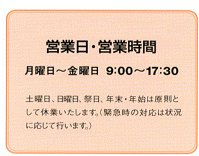
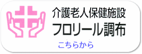

トップページ ＞ 調布訪問看護ステーション
調布訪問看護ステーションへお越し頂きありがとうございます。
訪問看護部門をご紹介いたします。
調布訪問看護ステーションでは、皆様が安心して住み慣れた家庭で生活できるようお手伝いさせていただきたいと考えております。病気や加齢に伴い生活する上でお困りの方、介護をなさっている家族の方の悩み事の相談や、一人一人の状態に合わせた支援を行い、在宅での生活を一緒に考えていきたいと思っております。
- 介護が大変で共倒れしそう
- 痴呆がでてきて不安
- 点滴や呼吸器の管理が不安
- 床ずれがある、できそう
- トイレにつれていけない
- お風呂に入れるのが大変
- 散歩したいが外に出られない
- 寝たきり又は寝たきりに近い
- リハビリテーションをしてほしい
- 薬の指導を受けたい
- 手すりをつける場所等を相談したい
- 介護料用機器の使い方が使い方がわからない
- 福祉サービスの相談がしたい
- 退院後の家庭での生活に不安がある
- 夜間や緊急時に不安がある
(1) 介護保険適用の方
要支援以上と認定された方
（自立の方はご利用できません）。
介護計画（ケアプラン）に訪問介護を入
れて作成することが必要です。
介護計画（ケアプラン）は介護支援専門
員（ケアマネジャー）がお手伝いして作成
しますが、主役は利用される皆様です。
ケアマネジャーともご相談下さい。
(2) 医療保険適用の方
医療的に重症である特定の病名の方に
のみ使用できます。
≪介護保険≫
介護保険法に基づく料金の1割負担になります。
≪医療保険≫
加入健康保険の負担率によって異なります。
≪その他≫
実費になる費用があります。
まず、担当のケアマネージャーに御相談下さい。（介護保険の方）
担当ケアマネージャーが居ない場合は、担当地区の地域包括支援センターに御相談下さい。

かかりつけの医師にご相談下さい。
尚、理学療法士による訪問リハビリテーションを行っていますのでお気軽にご相談下さい。
調布訪問看護ステーション電話番号
